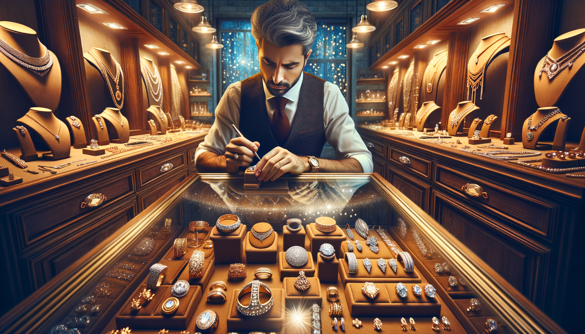
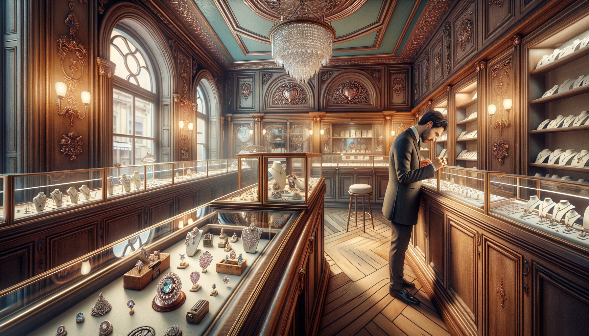
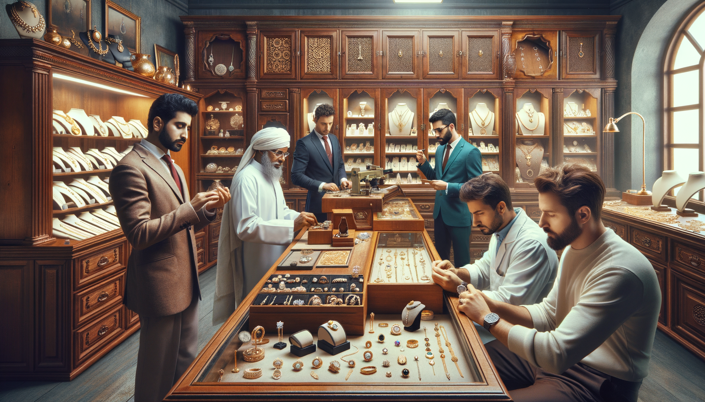

Jhon Za, Our Designer

With a passion for elegance and a talent for metal smithing, Jhon Za founded Mangata & Gallo right here in Austin. He’s dedicated to crafting jewelry that celebrates life’s biggest moments, from engagements to anniversaries. Each piece is infused with her artistry and attention to detail.
Our Unique Atelier Experience

In addition to our online store, Mangata & Gallo has an exclusive storefront in Austin where you can explore our designs in person. Our atelier offers a warm, personalized experience, allowing customers to browse Jhon’s latest collections and custom pieces.
Handcrafted Quality

At Mangata & Gallo, we pride ourselves on the quality and care that go into each piece. Mariana and her team of skilled artisans use only the finest materials to create jewelry that will stand the test of time, adding a touch of elegance to every special occasion.